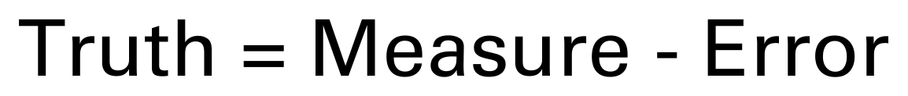
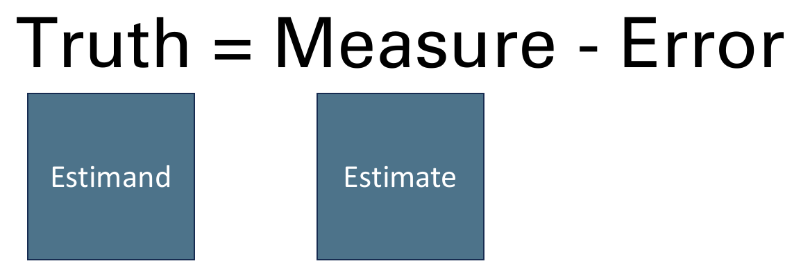
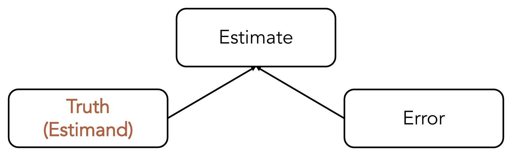
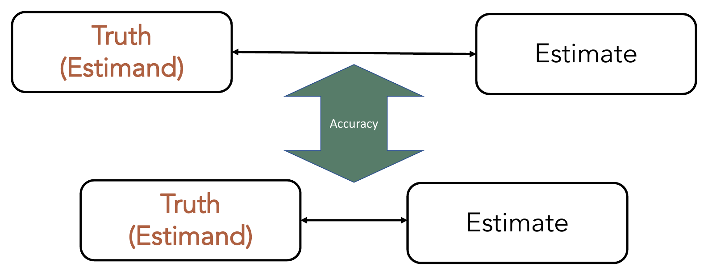
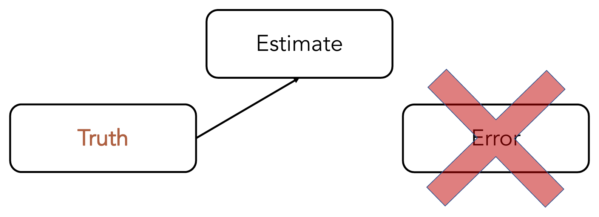
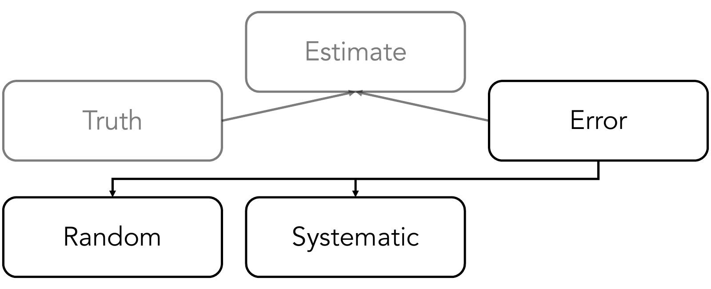
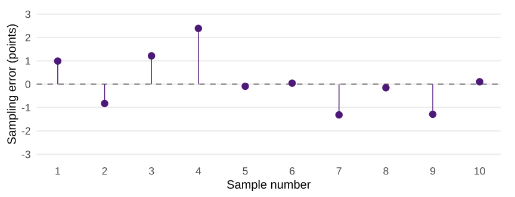
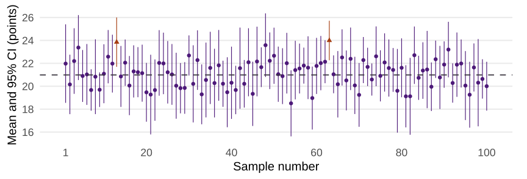

When we talk about error in epidemiology, we are generally talking about the difference between the true underlying population value of interest and our measure (or estimate) of that value.
A. True
B. False
True. Error is simply the difference between the truth and our estimate of the truth.
The Big Picture: What Is Truth?

The Big Picture: Truth by Another Name

The Big Picture: Truth from Another Perspective

Quick Terminology Review
Match each term to its definition.
Terms
Estimand
Estimator
Estimate
Error
Definitions
A. The quantity that actually resulted from our data collection and analysis.
B. The difference between the estimate and the estimand.
C. The true quantity we aspire to measure in our target population.
D. The analysis technique or algorithm used to produce the estimate from our data.
The Big Picture: Accuracy

The Big Picture: Estimate without Error

Quick Review: Types of Error
The two highest-level (most general) categories of error are typically considered to be…
A. Bias and confounding
B. Random and systematic
C. Differential and non-differential
D. Ignorable and non-ignorable
The Big Picture: Types of Error

What is random error?
Thought Experiment: Chance and Predictions
If we just had enough information about causes and effects, then we could perfectly predict every outcome.
A. True
B. False
C. Not sure
How Stressed Are Students?
A campus wellness team wants to estimate the mean stress score among all undergraduates this semester.
Population: All undergraduates this semester.
Parameter: Their population mean StressScore.
Sample: 12 randomly selected students.
Should we expect the mean stress score from these 12 students to be the same as the mean for all undergraduates?
The dashed line marks the population mean of 20.99.
The Same Samples, Shown as Errors

Subtract the population mean from each sample mean. The dashed line now marks zero error.
Do the Errors Cancel Out?
For these 10 samples: sum of errors ≈ +1.06 points; average error ≈ +0.106 points.
The errors in a particular set of samples need not sum to zero.
Average of the Sample Means
Average of the 10 sample means ≈ 21.09 points. Population mean ≈ 20.99 points.
An unbiased estimator has zero expected error across repeated samples.
How Much Might Our Estimate Vary?
In our demonstration, we knew the population mean, so we could calculate each sample’s error.
In a real study, we usually have one sample and an unknown population mean.
We cannot calculate our sample’s exact error, but we can estimate how much sample means would vary across repeated samples.
The standard error summarizes that variability.
A confidence interval uses it to express uncertainty around our estimate.
Standard Deviation and Standard Error
For the separate Prep 4 worked sample of 12 students:
Measure
What Varies?
StressScore Example
Standard deviation
Individual scores within the sample
3.64 points
Standard error
Sample means across repeated samples
1.05 points
For a sample mean, estimate the standard error as sample SD ÷ √n.
What Is a Confidence Interval?
Our sample mean is 21 points. It estimates the population mean, but another sample would give us a different estimate.
A confidence interval gives a range of plausible values for the population mean, based on our sample and the method’s assumptions.
It expresses uncertainty due to random sampling.
Its width tells us about the estimate’s precision: a narrower interval gives a more precise estimate.
A 95% confidence level means that, over many repeated samples, about 95% of intervals constructed using this method would contain the true population mean.
What Is the Margin of Error?
For a population mean, we will construct a confidence interval by adding and subtracting a margin of error from the sample mean.
The margin of error is the distance from the sample mean to either endpoint.
For our worked example:
A larger margin of error produces a wider confidence interval.
Calculating a Confidence Interval for a Population Mean
The margin of error is the standard error multiplied by a critical value. The critical value determines how many standard errors we extend on either side of the sample mean.
estimates the standard error, using the sample SD and sample size.
Because we estimate the population SD using the sample SD, we use a critical value, , from the t distribution.
The critical value depends on the confidence level and sample size. For 12 students and 95% confidence, .
On Samples, trace one row from its 12 scores to its mean, SE, and interval.
Check whether its interval contains the population mean of 20.99.
On Coverage, compare the intervals from all 100 samples.
Will every interval capture the mean? Must exactly 95 of 100 capture it?
Which Intervals Capture the Population Mean?
Dots show sample means. Vertical lines show 95% confidence intervals.

98 of 100 capture the mean. Samples 13 and 63 miss it.
Question: What Does 95% Confidence Mean?
A team reports a 95% confidence interval for mean StressScore. What does 95% describe?
A. The percentage of students whose scores fall inside the interval.
B. The long-run percentage of intervals from this method that capture the true mean.
C. The probability that the true mean is inside this particular interval.
D. The percentage of future sample means that fall inside this interval.
Question: Confidence Level and Interval Width
The team uses the same 12 scores and the same method to calculate three confidence intervals. Which interval is widest?
A. The 90% confidence interval.
B. The 95% confidence interval.
C. The 99% confidence interval.
D. They all have the same width.
What Makes an Estimate More Precise?
A smaller standard error means the sample estimate tends to vary less across repeated samples.
With the same sample SD and confidence level, a larger sample gives a narrower mean confidence interval.
With the same sample size and confidence level, a larger sample SD gives a wider interval.
For the same data, a higher confidence level gives a wider interval.
Prep 4 Worked Example: Mean and Standard Error
Let’s calculate a 95% confidence interval from one sample, step by step. Open the Prep 4 worked example.
Calculation
Excel Formula
Result
Sample size
=COUNT(A5:A1000)
12
Sample mean
=AVERAGE(A5:A1000)
21.00
Sample SD
=STDEV.S(A5:A1000)
3.64
Standard error
=D13/SQRT(D11)
1.05
Prep 4 Worked Example: Confidence Interval
Calculation
Excel Formula
Result
Degrees of freedom
=D11-1
11
Two-sided t value
=T.INV.2T(0.05,D15)
2.20
Margin of error
=D16*D14
2.31
Lower limit
=D12-D17
18.69
Upper limit
=D12+D17
23.31
Report the 95% CI for the population mean StressScore as 18.69 to 23.31 points. Excel uses full precision even when the cells display two decimals.
Prep 4 Worked Example: Comparing the Interval With the Population Norm
Prep 4, Step 3 asks whether your population mean could equal a specified reference value. For practice, the assignment uses 20 for StressScore and 10 for AnxietyScore. These are hypothetical values.
Assigned Outcome
Hypothetical Population Norm
StressScore
20
AnxietyScore
10
The estimated mean is 21 points, with a 95% CI of 18.69 to 23.31. The interval includes the norm of 20, along with values below and above it.
The data are compatible with a population mean of 20 under the method’s assumptions. This does not establish that the true mean is 20.
Group Exercise: One Score Changes
In a copy of the Prep 4 worked workbook, change the last score from 27 to 31.
Predict what will happen to the mean and to the interval width.
Record the new mean, sample SD, and 95% confidence interval.
Compare the new interval with the original. Is the estimate more or less precise? Does your decision about the norm of 20 change?
Group Debrief: One Score Changes
Result
Original Scores
With 31 Replacing 27
Sample mean
21.00
21.33
Sample SD
3.64
4.36
95% CI
18.69 to 23.31
18.57 to 24.10
The interval is wider because the scores vary more and the sample size is unchanged. The norm of 20 is still inside the interval.
What to Report for Prep 4
Report the sample size, sample mean, sample SD, and 95% confidence interval for your assigned outcome.
Explain what the interval estimates and what its width says about precision.
Compare the interval with the assigned hypothetical norm and explain your decision.